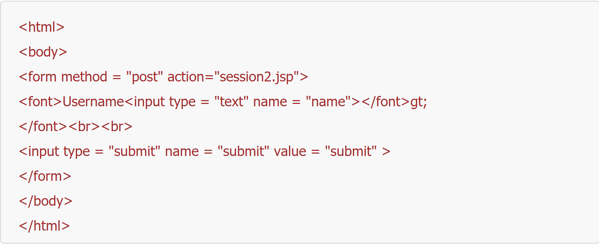
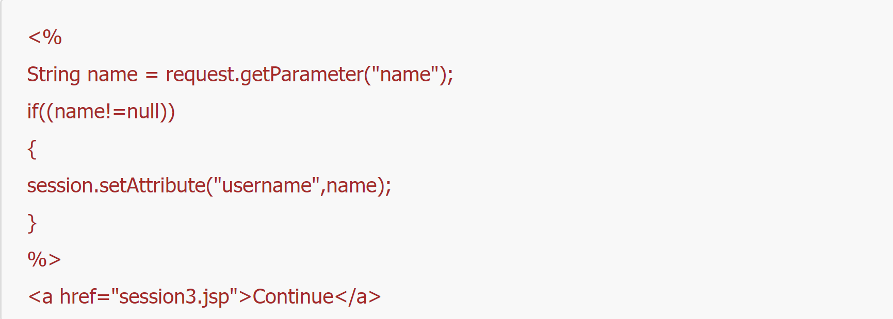
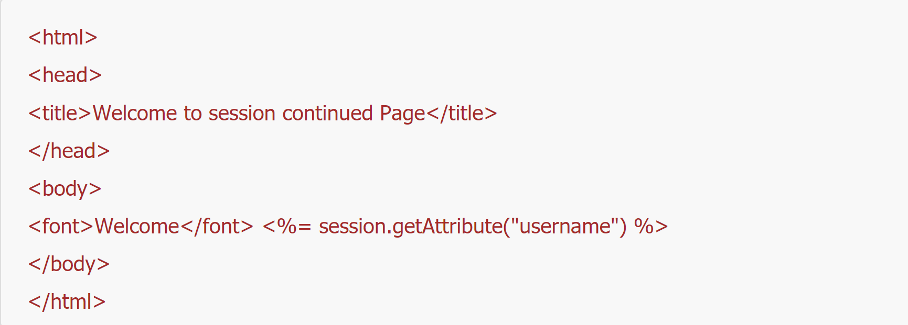

Session Handling
Session handling is done when a requested data is needed to be sustained for further use. Session handling becomes important because http protocol takes every request as new one.
JSP
In JSP, every request that arises is being generated as a unique session that is being restores to the client machine. Cookies stores the information to the client browser for more efficient browsing, client can access again the sites they have accessed before without loggin in again. Session is embedded to GET and POST method. Rewriting of session information is appended to the end of the URL.
Node JS Libraries
Example 1:

Example 2:

Example 3:
